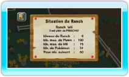

16 |
Panneau d’affichage |
 |
● Recherche Pokémon Eulalie vous demande de rechercher un Pokémon spécifique et de l’amener au Ranch. Ce genre de requête survient quand un Pokémon de Pokémon Diamant ou Pokémon Perle est déposé au Ranch. Le temps dont vous disposez pour une Recherche Pokémon est limité. Lorsque le temps imparti est écoulé, la demande disparaît.
Les Pokémon concernés par ces avis de recherche sont généralement ceux que vous n’avez pas capturés dans Pokémon Diamant ou Pokémon Perle (informations basées sur le Pokédex). Si vous trouvez un Pokémon faisant l’objet d’un avis de recherche et que vous l’amenez au Ranch, une nouvelle Recherche Pokémon commence. En terminant les missions de Recherche Pokémon, vous parviendrez à compléter votre Pokédex. Utilisez cette fonction pour terminer votre Pokédex national!
Sur l’écran de Recherche Pokémon, placez le curseur sur un Pokémon et appuyez sur Note: lorsque vous déposez un Pokémon au Ranch pour la première fois, les données de Recherche Pokémon ne sont pas enregistrées. Elles le seront à partir du deuxième dépôt. Lorsque vous avez accompli une mission de Recherche Pokémon, pointez la flèche en bas de l’écran et appuyez sur
Lorsque vous déposez un Pokémon recherché au Ranch, Eulalie vous invite généralement à un échange de Pokémon. Le Pokémon que vous échangez avec Eulalie sera considéré comme un Pokémon du Ranch d’Eulalie. Notez que le Pokémon que vous obtenez après un échange avec Eulalie peut être retiré. Cependant, le Pokémon que vous avez donné à Eulalie ne peut pas être retiré afin d’être déposé sur votre carte DS Pokémon Diamant ou Pokémon Perle. 
● Situation du Ranch Vous pouvez voir le niveau du Ranch, le nombre de Pokémon en votre possession ou le nombre maximum de Mii que vous pouvez accueillir dans votre Ranch. |
 pour savoir comment capturer le Pokémon faisant l’objet d’un avis de recherche ou pour connaître les conditions requises pour sa capture. Si Eulalie recherche plusieurs Pokémon en même temps, faites défiler les avis de recherche en sélectionnant la flèche verte et en appuyant sur
pour savoir comment capturer le Pokémon faisant l’objet d’un avis de recherche ou pour connaître les conditions requises pour sa capture. Si Eulalie recherche plusieurs Pokémon en même temps, faites défiler les avis de recherche en sélectionnant la flèche verte et en appuyant sur  |
 |
 |